X3218–X3309¶
Side-Swapping SS(a → bc) Points, Parabola Vertices & Morley Equilateral Triangles
X3218–X3309 (Side-Swapping SS(a → bc) Points, Parabola Vertices & Morley Equilateral Triangles) — 16 representative centers (from 92 in collection) constructed on acute reference triangle \((a, b, c) = (5, 6, 7)\) with unit baseline AB = \(1\).¶
Group Preamble — Points Associated with Equilateral Triangles (are associated with six equilateral triangles)
The points X3272 to X3283 are associated with six equilateral triangles related to the (1st) Morley triangle; trilinears for vertices of these triangles are given just below. Received from Milorad R. Stevanovic, Nov. 24, 2007 and Dec. 25, 2007.
Circumtangential triangle, inscribed in the circumcircle of ABC and homothetic to the 1st Morley triangle, T1T2T3. For trilinears, of the vertices, see TCCT, page 166, or MathWorld. Trilinears found by M. Stevanovic:
Circumnormal triangle inscribed in the circumcircle of ABC and homothetic to the 1st Morley triangle, N1N2N3. For trilinears, of the vertices, see TCCT, page 166, or MathWorld. Trilinears found by M. Stevanovic:
Jean-Pierre Ehrmann and Bernard Gibert, “A Morley Configuration,” :cite:`Forum Geometricorum <forum-geometricorum>` 1 (2001) 51-58. (Click here to download a PDF of this article.)
Peter Moses notes (April, 14, 2008) that, regarding the reference triangle R and the 6 equilateral triangles (here abbreviated as M, P, S, T, N, J), there are 21 pairs, and each pair except {R,T}, {R,N}, {R, J} are perspective. Perspectors for the remaining 18 pairs are given by this table:
Pair Perspector R, M X357 R, P X1136 R, S X1134 M, P X358 M, S X1135 M, T X3278 M, N X3279 M, J X3273 P, S X1137 P, T X3280 P, N X3281 P, J X3274 S, T X3282 S, N X3283 S, J X3275 T, N X3 T, J X3334 N, J X3335
Centers of the six equilateral triangles are as follows:

X3218INTERSECTION OF LINES X2X_7 AND X8X_46
X3219INTERSECTION OF LINES X2X_7 AND X8X_90
X3220INTERSECTION OF LINES X3X_9 AND X36X_238
X3221SS(a → bc) OF X647
X3222ISOGONAL CONJUGATE OF X3221
X3223ISOGONAL CONJUGATE OF X1740
X3224ISOGONAL CONJUGATE OF X194
X3225SS(a → bc) OF X98
X3226SS(a → bc) OF X105
X3227SS(a → bc) OF X106
X3228SS(a → bc) OF X111
X3229ISOGONAL CONJUGATE OF X3225
X3230ISOGONAL CONJUGATE OF X3227
X3231ISOGONAL CONJUGATE OF X3228
X32322nd TRISECTED PERIMETER POINT
X3233VERTEX OF THE INSCRIBED KIEPERT PARABOLA
X3234VERTEX OF THE INSCRIBED YFF PARABOLA
X3239ISOGONAL CONJUGATE OF X1461
X3240INTERSECTION OF LINES X1X_2 AND X6X_100
X3241REFLECTION OF X2 IN X1
X3242REFLECTION OF X6 IN X1
X3243REFLECTION OF X9 IN X1
X3244REFLECTION OF X10 IN X1

X3245REFLECTION OF X1 IN ITS TRILINEAR POLAR
X3246MIDPOINT OF X1 AND X44
X3247INTERSECTION OF LINES X1X_6 AND X2X_2321
X3248CROSSSUM OF X1 AND X190
X3249SS(a → bc) OF X764
X3250INTERSECTION OF X37X_513 AND X187X_237
X3251INTERSECTION OF X1X_513 AND X42X_663
X3252INTERSECTION OF X7X_192 AND X37X_513
X3254REFLECTION OF X9 IN X11
X3255INTERSECTION OF X104X_551 AND X390X_1392
X3256ISOGONAL CONJUGATE OF X3255
X3257ISOGONAL CONJUGATE OF X1635
X3258CROSSSUM OF X74 AND X110
X3259CROSSSUM OF X100 AND X104
X3260ISOTOMIC CONJUGATE OF X74
X3261ISOTOMIC CONJUGATE OF X101
X3262ISOTOMIC CONJUGATE OF X104
X3263ISOTOMIC CONJUGATE OF X105
X3264ISOTOMIC CONJUGATE OF X106

X3265ISOTOMIC CONJUGATE OF X107
X3266ISOTOMIC CONJUGATE OF X111
